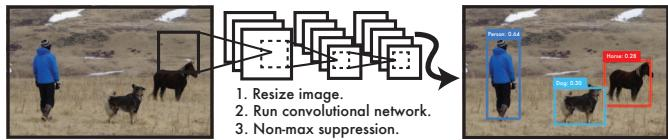
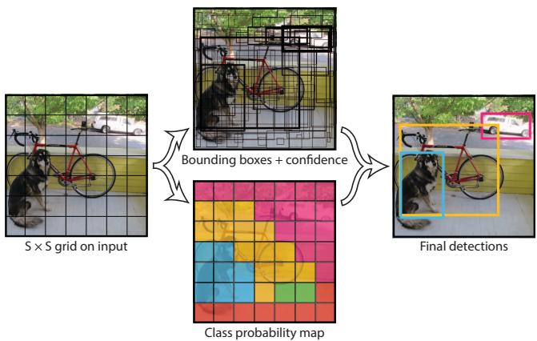
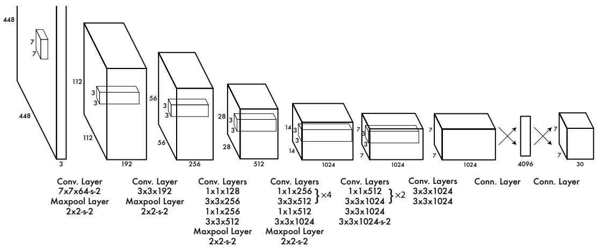

看不到上下文。R-CNN 系方法只看一个个小区域，原文说得很直白：Fast R-CNN mistakes background patches in an image for objects because it can't see the larger context——只看一小块，就容易把背景里一块像东西的纹理误当物体。
它为什么这么算：原文自己给平方和误差列了两条极具体的「不完美」理由：(a) 它把定位误差和分类误差等权地看，这显然不合理；(b) 每张图里大量格子没有物体，这些格子的置信度会被往 0 推，原文原话是 often overpowering the gradient from cells that do contain objects——它们会压过那些真有物体的格子传来的梯度，导致训练早期就发散。这第 (b) 条正是 λ_noobj = 0.5 的直接理由：把没物体的那笔账压低一半。
Fast R-CNN 的 top 检测里有 13.6% 是背景假阳性（不含任何物体的框），而 YOLO 只有它的约三分之一。原文解释：YOLO 看得到全图，所以背景误检率显著更低。
所以它们能互补
Fast R-CNN 单独是 71.8，与 YOLO 组合后是 75.0（+3.2）；而它与其他 Fast R-CNN 变体组合只涨 0.3 到 0.6。增益来自「错得不一样」，不是普通 ensemble。
★ 一个必须提醒的易误读点：原文 §4.5 的 Figure 5 表里，YOLO 的 VOC 2007 AP 写的是 59.2。这个数字是 person 单类的 AP，而 Table 1 里的 63.4 是 20 类的 mAP。两者口径不同，不能直接比较——这也是为什么我们前面要花力气先讲清 mAP / AP 的区别。

原图注（Fig. 1）：The YOLO Detection System. Processing images with YOLO is simple and straightforward. Our system (1) resizes the input image to 448×448, (2) runs a single convolutional network on the image, and (3) thresholds the resulting detections by the model's confidence. 怎么看这张图：这张图就是「一步到位」的字面展示，请数一数中间有几个方框——没有候选框生成、没有逐框分类、没有逐框调框，只有「缩放到 448×448 → 跑一次卷积网络 → 按置信度卡阈值」三步。与上一张自绘图里两阶段那条「断成五截」的流水线对着看，差别一目了然。 要记住的一句话：同一张图、同一个网络，前向一次就把框和类别一起交出来——这就是「You Only Look Once」这句名字的全部含义。

原图注（Fig. 2）：The Model. Our system models detection as a regression problem. It divides the image into an S×S grid and for each grid cell predicts B bounding boxes, confidence for those boxes, and C class probabilities. These predictions are encoded as an S×S×(B*5+C) tensor. 怎么看这张图：它把上面那张自绘图里的两个部分画在了一起——左边是叠了网格的照片与负责格，右边是那个 S×S×(B×5+C) 的张量。盯着右边看厚度方向：每一个格子在深度上塞着一串数，那就是「2 个框 × 5 个数 + 20 个类概率」。 要记住的一句话：检测这件事在这里被写成了一个「从图回归到张量」的问题——没有候选、没有分类器，只有一个张量。

原图注（Fig. 3）：The Architecture. Our detection network has 24 convolutional layers followed by 2 fully connected layers. Alternating 1×1 convolutional layers reduce the features space from preceding layers. We pretrain the convolutional layers on the ImageNet classification task at half the resolution (224×224 input image) and then double the resolution for detection. 怎么看这张图：读三个地方就够了：① 24 个卷积层 + 2 个全连接层，这是「一个网络」的规模；② 那些 1×1 卷积层，作用是给特征降维，替代 GoogLeNet 的 inception 结构；③ 图注里那个分辨率的做法——先在 224×224 上做分类预训练，检测时翻倍到 448×448，理由是检测需要更细的视觉信息。 要记住的一句话：YOLO 的骨干刻意做得平淡——它的创新在「把检测写成回归」，不在网络结构。
6. 它不完美在哪：小物体成堆会漏，定位是第一大错源
原文的自我检讨非常具体，恰好也是 SLAM 论文最常引用它的原因。
空间约束太硬，成堆的小物体必漏。原话：YOLO imposes strong spatial constraints … each grid cell only predicts two boxes and can only have one class. This spatial constraint limits the number of nearby objects.每格只能有两个框、且只能有一个类别——所以「一群鸟」这种挤在一起、又都归到同一格的情况，它是注定要漏的。
对不常见的长宽比和形态泛化差。原话：it struggles to generalize to objects in new or unusual aspect ratios or configurations。
用了相对「粗」的特征来预测框。原话：uses relatively coarse features for predicting bounding boxes——因为经过多次下采样，特征图上的一个点已经代表原图一大片了。
★ 最主要的问题是定位不准。原文原话：our loss function treats errors the same in small bounding boxes versus large bounding boxes … Our main source of error is incorrect localizations.而它的自评是：YOLO still lags behind state-of-the-art detection systems in accuracy … it struggles to precisely localize some objects, especially small ones。
为什么最后一条对 SLAM 特别要命？因为 SLAM 用检测器不是为了「知道图里有个人」，而是为了把这个人身上的像素/特征点剔掉。而 YOLO 给的是一个矩形框——框里必然混着背景。SLAM 论文里把这件事说得很明白，我们在下一节展开。
原图注（Fig. 4）：Error Analysis: Fast R-CNN vs. YOLO. These charts show the percentage of localization and background errors in the top N detections for various categories (N = # objects in that category). 怎么看这张图：这张图是 YOLO 全部「错在哪」的一手证据，怎么看：横轴是该类别的检测数量 N，纵轴是错误占比，蓝色/橙色分别代表两种错误——Localization（定位错）与 Background（把背景当成物体）。请对比两条曲线的形状：YOLO 的定位错误占比明显更高，而它把背景误当物体的比例明显更低。原文给了具体数值：Fast R-CNN 的 top 检测里 13.6% 是背景假阳性，而 YOLO 约为其三分之一。 要记住的一句话：YOLO 和两阶段不是「谁全面更好」，而是错的方向不一样——这正是它们组合起来能涨 3.2 个点的原因。
这张图在画什么：三格连环画。① 一只猫，一个框贴得紧，正常发挥；② 两只挨着的猫，检测返回两个框、两个 cat 标签，但两个框大面积重叠、边界说不清；③ 六只挤在一起的鸟，检测最后只交出 1 个框——因为网格规则规定每格只有两个框、且只能有一个类别。 怎么看这张图：① 比较第 1 格与第 2 格——同一套方法，物体一挨近就开始说不清了；② 再看第 3 格——这不是「精度不够」，而是空间约束把数量上限卡死了，原文自述的 limits the number of nearby objects 说的就是它；③ 最后看底部那行：框里必然混着背景，这就是 SLAM 论文抱怨「YOLO 的框会把静态点也剔掉」的根源。想解决「哪些像素」，只能等一九二课的掩码分支。 要记住的一句话：检测给的是「框」，不是「像素」——这两个词的差别，就是 SLAM 里「误剔静态点」这个毛病的来源。
原文：方法充分利用 RGB-D 相机的深度信息以及 YOLOv5 的先验信息。它给出了 YOLO 的实测耗时 7.1 ms，整系统 Tracking 33.4 ms（对比 ORB-SLAM3 的 19.8 ms）。这是「检测器在 SLAM 里到底占多少预算」的现成答案——和一九二课 Mask R-CNN 的 195 ms 一比，你就知道 SLAM 圈为什么更爱用检测而不是分割了。
2023_SG-SLAM —— 说出了这个零件最要害的毛病
原文先复述前人的做法：Zhang 等用 YOLO 获取动态物体的语义信息，再根据语义信息剔除动态特征点；接着直接指出问题——the way YOLO extracts semantic information by bounding box will cause a part of static feature points to be wrongly regarded as outliers and eliminated（YOLO 用边界框来提取语义信息的方式，会导致一部分静态特征点被误当成外点剔除）。它自己的选型理由也值得记：用目标检测网络而不是语义分割网络、加上多线程与关键帧建图，正是为了克服实时性短板。
2023_DGM-VINS / 2019_SuMa / 2020_Kimera
DGM-VINS 的参考文献里直接列了 YOLO-SLAM；SuMa 的参考文献里是 YOLOv3；Kimera 也是把检测/语义融进实时建图库的早期代表。它们共同说明：YOLO 是 SLAM 圈出现频率最高的检测零件，没有之一。
YOLO 承认「每格只能报两个框、且只能有一个类别」。请举出一个会因此漏检的真实场景，并说明这类漏检对 SLAM 意味着什么。
展开查看答案
场景：一群挤在一起的鸟、一排并肩走的人、货架上贴着的一排相同商品——多个小物体的中心都落在同一格附近，而该格最多只能交出两个框、一组类概率，于是漏检。对 SLAM 的含义：漏检意味着有动态物体没被剔掉，它的特征点仍会参与位姿估计，污染轨迹。所以 SLAM 不能只靠语义前端一道闸门，必须再加几何一致性检查（如 DynaSLAM 的多视图几何、YOLO-SLAM 的 depth-RANSAC）。